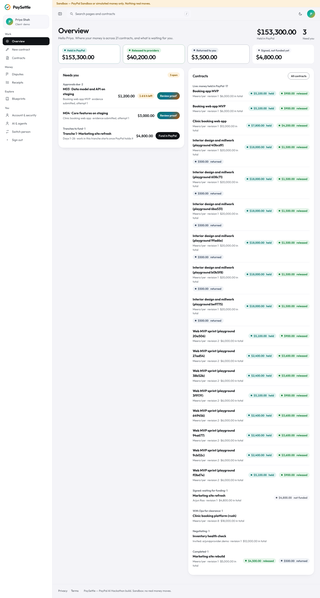
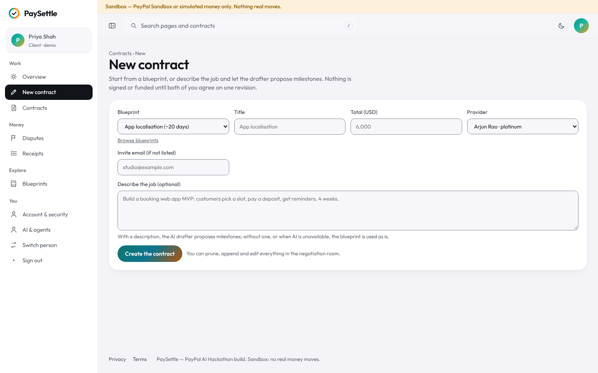
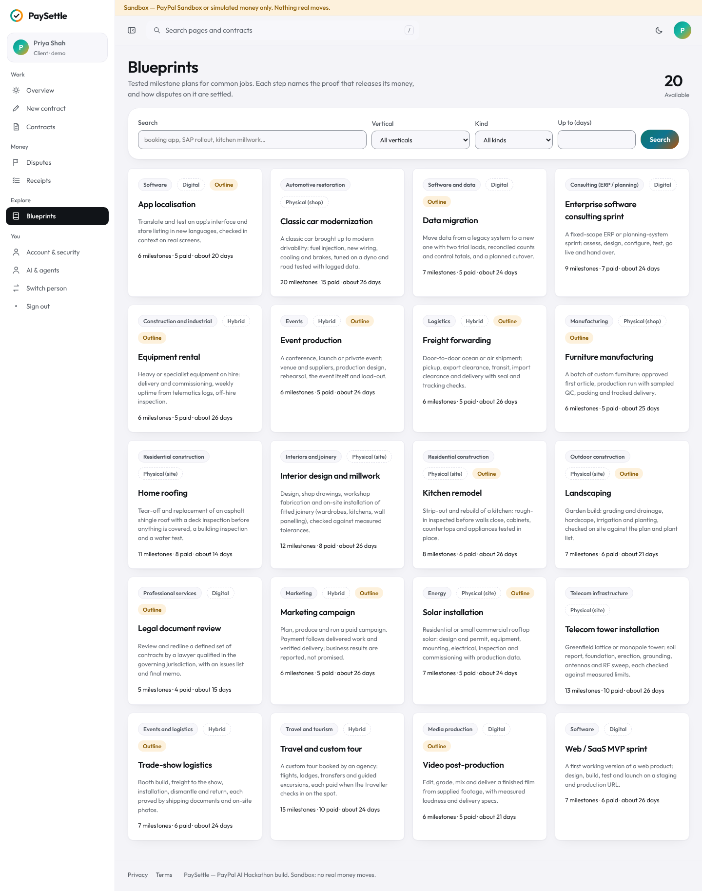
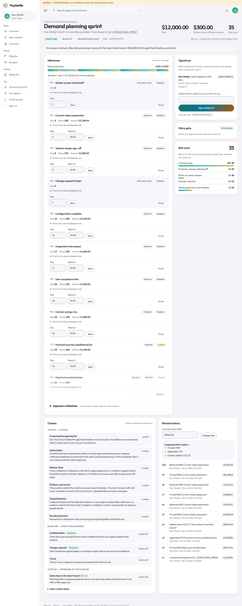
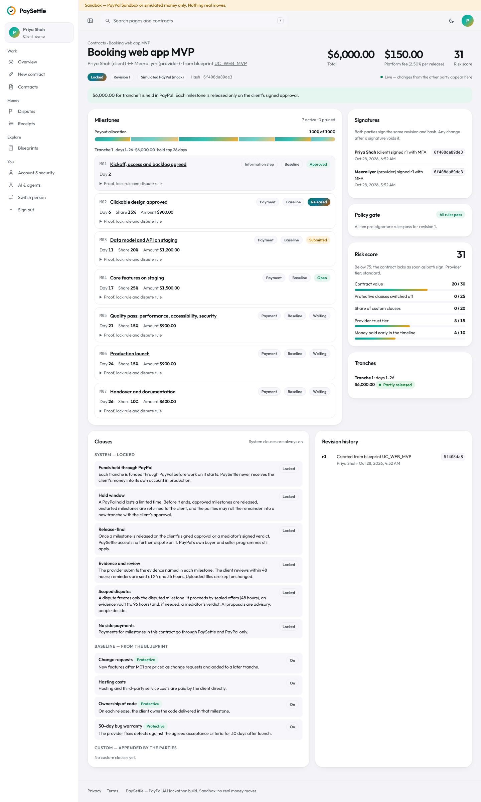
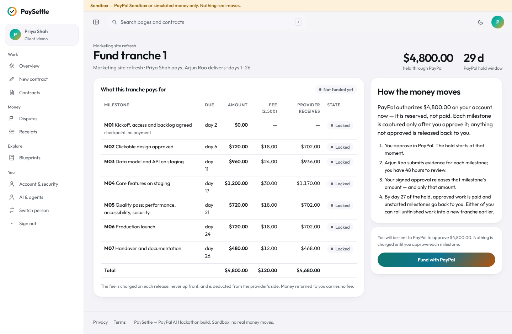
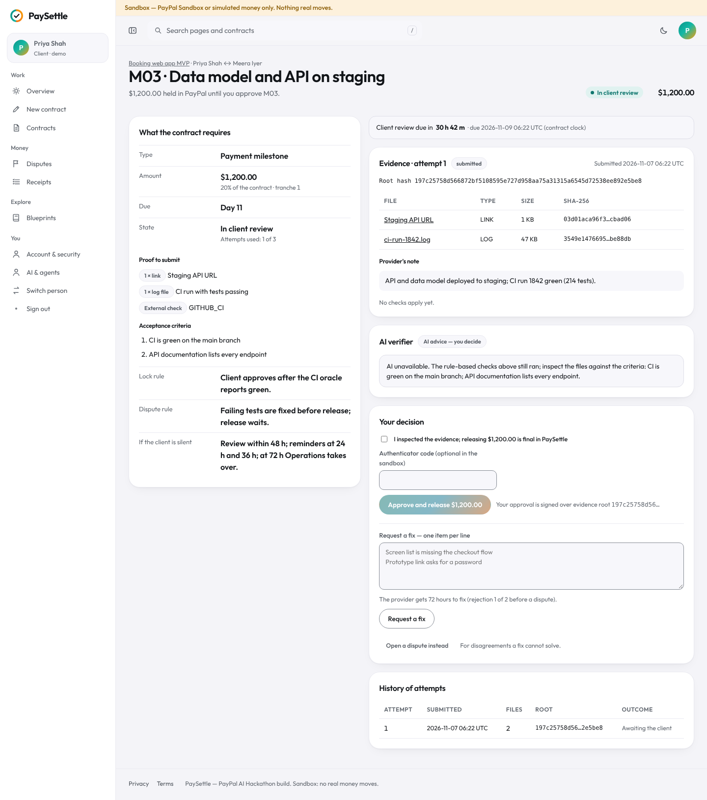
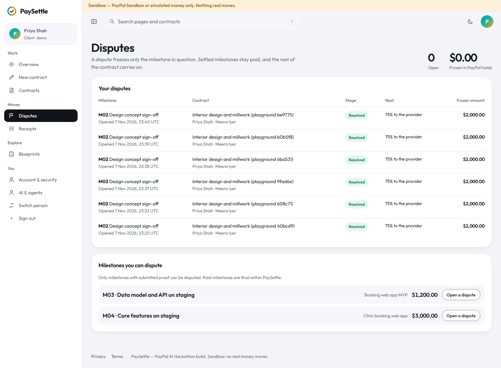
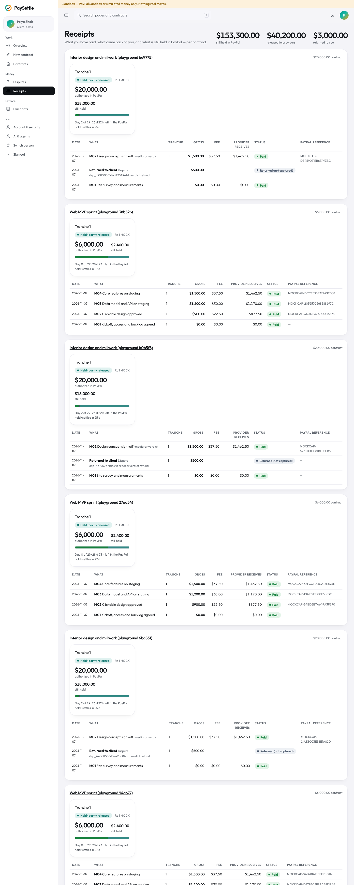

What this role does
As a client (demo: Priya Shah or Dan Okafor) you start contracts from vetted blueprints, negotiate them with the provider, sign, fund each tranche through PayPal, review evidence, and approve releases. If a delivery cannot be fixed, you open a dispute on that one milestone.
Signing in
Open the demo, choose Try the live demo (or go to /login) and pick Priya Shah under “Explore the live demo”. No password is needed in the sandbox. You land on /client.
Step by step
1. Read your overview
The overview answers two questions: where is my money, and what is waiting for me?
- Open Overview in the menu.
- The tiles show what is held in PayPal, released to providers, returned to you, and signed but not funded yet.
- Needs you lists approvals that are due (with the review time left) and tranches you still have to fund.
- Contracts groups every contract by state: live, waiting for funding, with Ops, negotiating, completed.

2. Start a contract from a blueprint
Blueprints are tested templates with milestones, proof rules and protective clauses already in place.
- Open New contract (or browse Blueprints first).
- Choose a blueprint, give the contract a title and total, and invite the provider.
- PaySettle creates a negotiation workspace at revision 1 and runs the policy gate (ten pre-signature rules).


3. Negotiate: append and prune
Both parties shape the same document. Every change creates a new revision, and any signature on the old revision is voided.
- Open the contract from Contracts.
- Use Prune to switch off an optional milestone, Restore to bring it back, Save to change a day or a share, or Append a milestone for a custom step.
- Watch the Payout allocation bar: payment milestones must add up to exactly 100% before anyone can sign.
- The Policy gate card lists anything to fix; the Risk score card shows whether Operations will review the contract after both sign (score 75 or more).
- System clauses (holds, release-final, scoped disputes) cannot be switched off.

4. Sign and lock
Signatures bind to the revision number and its hash.
- When the policy gate says “All rules pass”, press Sign revision N.
- When the provider countersigns the same revision, the contract locks and is split into tranches. If the risk score is 75 or more, it goes to Operations first (target: within 2 hours).

5. Fund a tranche through PayPal
Funding creates a PayPal hold for one tranche. It is reserved on your account, not paid.
- From Needs you → Tranches to fund, press Fund in PayPal.
- Check the table: each milestone, its fee and what the provider receives. The fee is charged per release and deducted from the provider's side.
- Press Fund with PayPal and approve in the PayPal window (in the mock mode this is simulated). The hold window starts at that moment.

6. Review evidence and approve a release
When the provider submits evidence, you have 48 hours to review (reminders at 24 h and 36 h).
- From Needs you → Approvals due, press Review proof.
- Left: what the contract requires (proof, acceptance criteria, lock and dispute rules). Right: the evidence package with file hashes and the Checks (signals such as counts, GPS distance, dates).
- Read the AI verifier panel. It is marked “AI advice — you decide”; it never approves anything.
- To release: tick I inspected the evidence…, then press Approve and release $…. Your approval is signed over the evidence root hash.
- The heading then shows the amount released to the provider's PayPal account and the fee. A release is final in PaySettle.
- If something is missing, list the fixes under Request a fix (one per line). The provider gets 72 hours; the third rejection opens a dispute.

7. Open a dispute on one milestone
A dispute freezes only that milestone's amount; the rest of the contract continues.
- On the milestone page choose Open a dispute instead, or go to Disputes.
- Tier 1: each side makes sealed offers of the provider's share (up to three rounds, 48 hours). Offers stay hidden; if they are close enough (a gap of 5 points or less), the dispute settles there.
- Tier 2: both sides add statements and files to the evidence vault, which then seals and cannot change.
- Tier 3: a mediator reads the sealed dossier and signs a verdict; the split is paid as two legs (refund to you, release to the provider).

8. Check receipts
Receipts show, per contract, what you paid, what came back and what is still held.
- Open Receipts.
- Each tranche shows its hold window and every release or return with gross, fee, net and the PayPal reference.

What the money states mean
PaySettle never keeps the client's money in its own account. Each tranche (a block of milestones that fits inside one PayPal hold window) is an authorization on the client's PayPal account; each approved milestone is a partial capture from it.
| You see | Where the money is |
|---|---|
| Planned — not funded | Nowhere yet. The contract is signed and locked; the client has not approved the PayPal hold. |
| Waiting for PayPal approval | The order exists in PayPal; the client still has to approve it there. Nothing is reserved until they do. |
| Held in PayPal | Reserved on the client's PayPal account (an authorization). Not paid to anyone yet. |
| Partly released | Some milestones were approved and captured to the provider; the rest is still held. |
| Released | That milestone's amount was captured to the provider's PayPal account, minus the platform fee (2.5% per release in the demo). |
| Frozen: in dispute | Only the disputed milestone's amount is frozen; it stays held in PayPal while the dispute runs. Other milestones carry on. |
| Returned to client | Released back to the client: the unused part of the hold is voided, or a captured amount is refunded after a verdict. |
| Rolled over | The hold window was closing, so the unfinished remainder moved into a new tranche that the client funds again. |
| Settling / Closed | The hold window is ending: approved work is paid and unstarted milestones go back to the client. Closed means nothing is left on that tranche. |
| Paused for checks | Reconciliation found a difference between the contract, the ledger and PayPal. Releases on that tranche wait until Finance resolves it. |
Limits of this demo
- Sandbox only. Money is either PayPal Sandbox money or simulated by the mock rail (“Simulated PayPal (mock)”). Nothing real moves, and the yellow banner at the top of every app page says so.
- The mock rail keeps its records in memory. After a server restart, Finance's reconciliation may show older tranches as “no PayPal data”; the ledger is still checked against the contract.
- AI is advisory. The AI verifier, the mediation proposal and the drafting help only suggest. People approve, sign and decide; the rule-based checks run with or without AI. Without an AI key the panels say “AI unavailable”.
- Time can be simulated. The Judge Playground moves a session's virtual clock only; deadlines you see on seeded data use each contract's own clock.
- Demo people are shared. Everyone using the demo signs in as the same personas, and Playground scenarios add contracts to them, so lists grow over time.
- PaySettle is a hackathon build, not a licensed payment, escrow or legal service. Contract text and dispute outcomes are not legal advice.